1.MVC 패턴을 구현하기 위해 기본 패키지에 SampleController 클래스를 하나 만들어준다
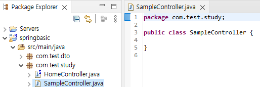
2-1. 간단한 예제로 요일을 출력하는 컨트롤러를 만들어보자
소스 원문 텍스트 파일
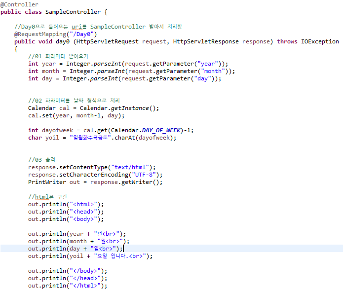
2-2. 2번에서 만든 컨트롤러를 파라미터값을 받아 테스트 해본다
컨트롤러를 만들때 해당 컨트롤러를 출력할 jsp파일도 WEB-INF/views 폴더에 같이 만들어줘야한다
localhost:포트번호/RequestMapping 에서 설정한 이름?파라미터1=값&파라미터2=값.. 형태로 접속
*만약 톰캣에서 지정한 기본경로가 있다면 포트번호 뒤에 /경로명을 넣어줘야 한다
예시)localhost:8090/Day0?year=2023&month=2&day=1
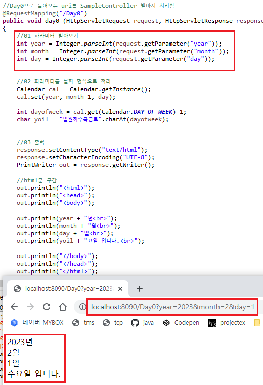
3-1. 파라미터값을 인자로 받는 경우
마찬가지로 jsp파일도 RequestMapping에 맞게 또 만들어준다
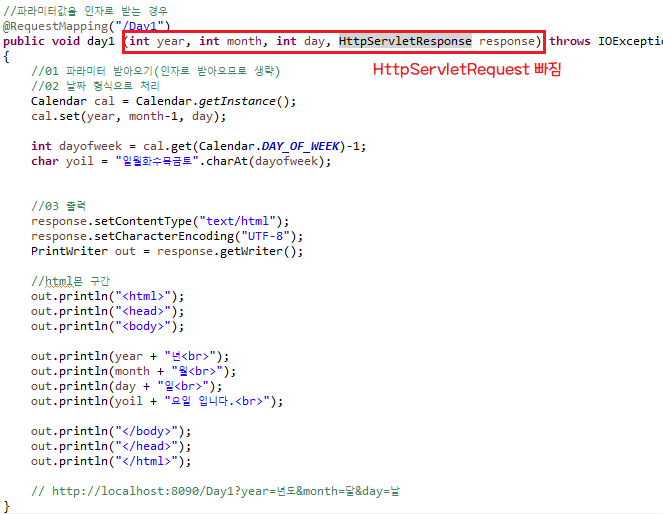
3-2. 아까 만든 컨트롤러도 2번과 동일하게 접속해주고 확인해보자
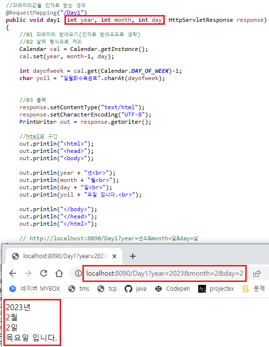
4-1. 파라미터값을 인자로 받아 jsp 경로로 리턴하는 경우
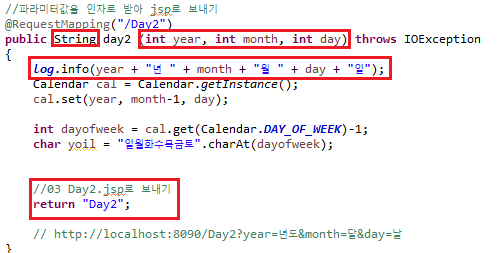
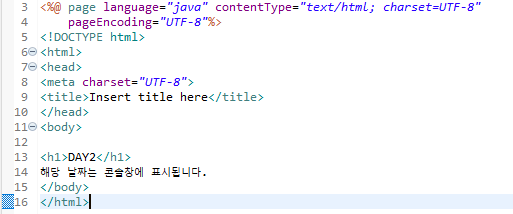
4-2. @Log4j 어노테이션으로 로그를 통해 콘솔창에서 확인하자
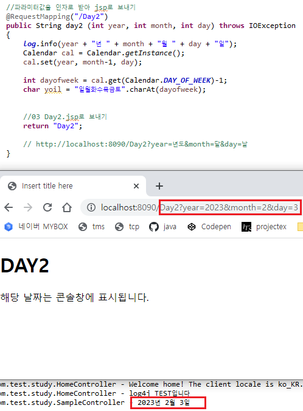
5-1. 파라미터값을 인자로 받고 그걸 jsp로 보내기위해 Model을 사용한다
jsp파일에서 EL태그($)를 사용하기 위해 JSTL CDN을 받아온다
JSTL CDN 텍스트 파일
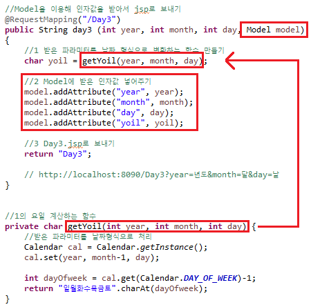
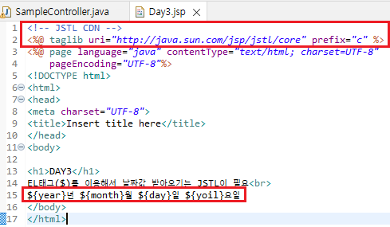
5-2. 서버를 열어서 잘 들어갔는지 확인해보자
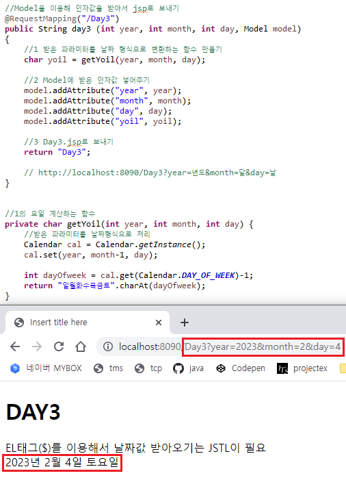
5-3. 리턴값과 jsp파일을 하위경로에 넣어주어도 정상적으로 작동한다
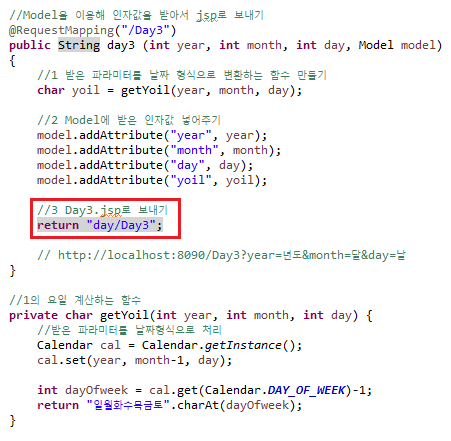
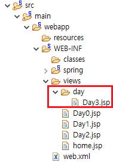
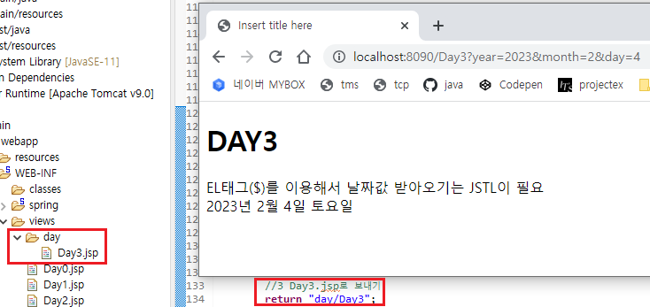
6-1. 파라미터값을 DTO로 받아서 만들어 주는 경우(5번과 같음)
인자로 받는 연월일 값을 DTO파일을 만들어서 만들어주고 어노테이션도 같이 선언
jsp파일에서도 EL태그($)에 들어가는 값을 dto에서 받아오도록 변경
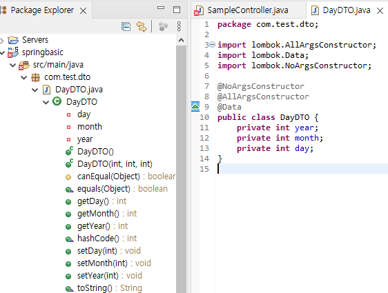
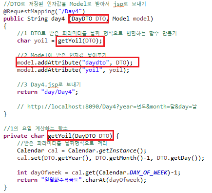
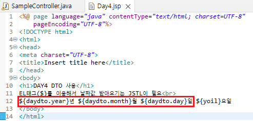
6-2. 서버를 열어서 마찬가지로 잘 들어갔는지 확인해보자
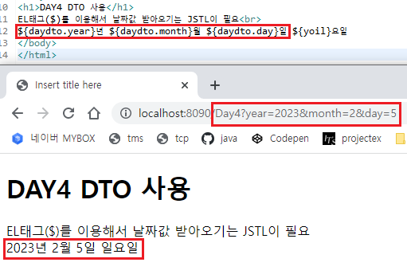